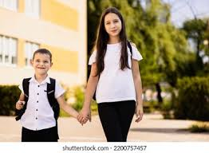

Se que no eh sido el mejor hermano, que te falle muchas veces, se que siempre me tuviste envidia por que era el mas lindo, pero eso cambio cuando llego Luciano y los dos pasamos a la bolsa de los feitos ajajajaj, se que mis elecciones en la vida nos han tenido distantes por muchisimos años, y que muy probablemente nuestras vidas tomen caminos separados algun dia, pero queria que sepas que...
No encontre fotos nuestras asi que puse a esos dos que creo que son peronistas. Ultimamente pense mucho en que significa ser un buen hermano, y pienso que era ser un amigo, ser una persona que te elijan sin el parentezco, y ahi me di cuenta que no me eligirian ni vos ni Lucho, y si duda quiero que sepan que pueden contar conmigo para todo, que siempre voy a estar y que los amo mucho.
Recuerdo las veces que trataba de hablar con vos, y vos siempre te tildaas y quedabas mirando ese punto fijo, jajajaja nunca supe que pasa por esa cabeza, si pensara si tiene que ir a una feria americana, si le dio de comer a sus gatos, si tiene hambre y piensa en comida o si solo no le importa lo que le digo y tiene un monito con dos platillos en la cabeza jajajaja
Tengo muchos recuerdos nuestros en el colegio, me defendias, me cuidabas, siempre estabas ahi para mi, fuiste una excelente compañera para mi, no podria haber pedido una hermana mejor, aun cuando ya estamso grandes, siempre pude contar con vos y vos siempre ofreces una mano aun cuando no te sobra nada. Solo pensas en ayudar y eso me enseño mucho sobre el valor familiar.

Se que no simepre estaremos el uno para el otro, que la distancia ira aumentando, solo quiero que tengas algo en claro, no importa la distancia, no importa el momento, siempre, siempre voy a estar ahi para vos, quiero que mi hermana sepa que yo me arrancaria el corazon sin dudarlo por ella.